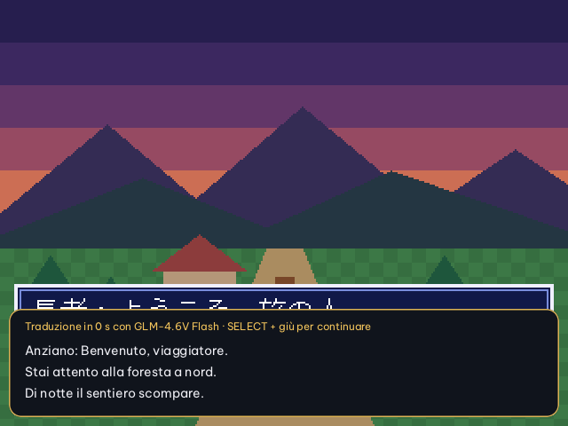
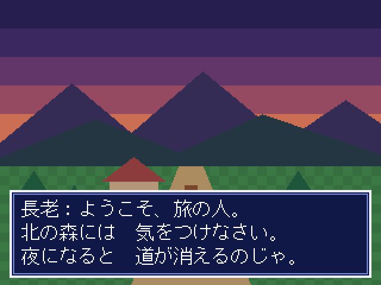
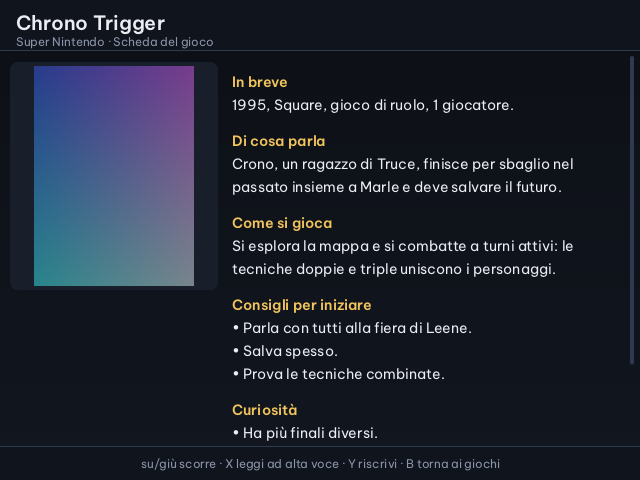
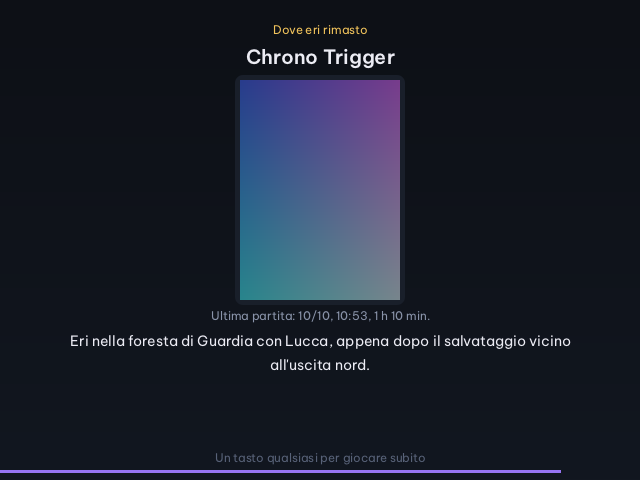
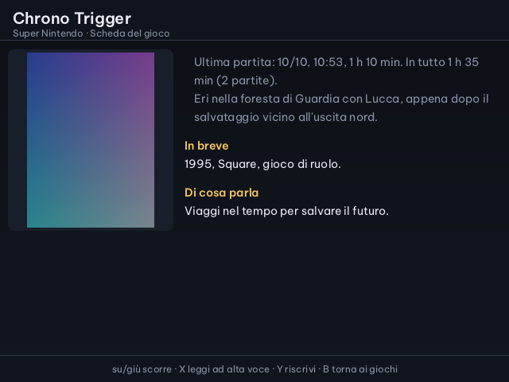
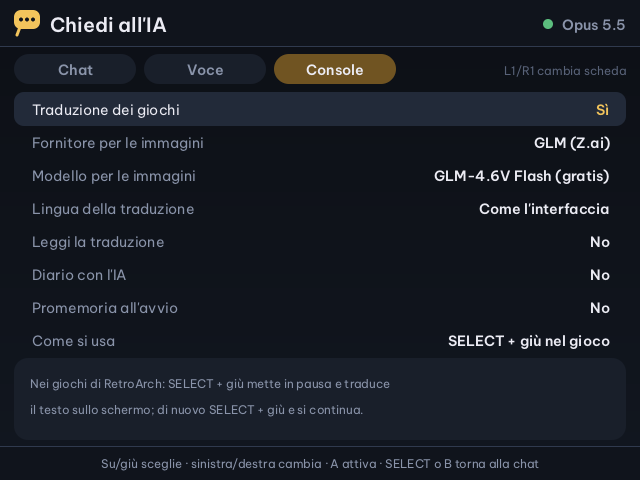

Cirmolo · intelligenza artificiale sulla Miyoo Flip
L'IA nei giochi
Tre aiuti che lavorano attorno ai tuoi giochi. Il traduttore mette in pausa e traduce il testo sullo schermo, per esempio dal giapponese. La scheda del gioco racconta di cosa parla e come si gioca. Il diario annota ogni partita e, quando riapri un gioco, ti ricorda dove eri rimasto.
Si accendono in Chiedi all'IA, scheda Console. Servono il Wi-Fi, una chiave API e un modello che legge le immagini; ce ne sono anche di gratuiti.

Traduttore dei giochi
SELECT + giù, e il testo è in italiano
Nei giochi di RetroArch, SELECT + giù mette in pausa e manda la schermata al modello scelto. La traduzione compare in un riquadro sopra il gioco; di nuovo SELECT + giù e si continua. La lingua di partenza la riconosce il modello.

Un modello che vede
Serve un modello che legge le immagini: Claude, GPT, Gemini, Qwen-VL o GLM-4.6V-Flash, che è gratuito.
Anche ad alta voce
Con «Leggi la traduzione» il riquadro viene anche letto, con la sintesi vocale scelta in Chiedi all'IA.
Le traduzioni restano
Ogni traduzione si aggiunge a un file per gioco in Saves/claude/traduzioni.
Il traduttore è un piccolo server per il servizio IA di RetroArch: parte e si ferma con il gioco, e risponde sempre con un'immagine, perché RetroArch sulla Flip non mostra il testo da solo. Funziona solo nei giochi aperti con RetroArch.
Scheda del gioco
Di cosa parla, come si gioca
Nell'elenco dei giochi premi MENU su un gioco e scegli «Scheda del gioco (IA)». Il modello scrive una scheda con la copertina: in breve, di cosa parla, come si gioca, consigli per iniziare e curiosità. La scheda si salva: la volta dopo si apre subito.

Nella scheda
| Su · giù | scorre |
| X | la legge ad alta voce |
| Y | la fa riscrivere |
| B | torna ai giochi |
In fondo la scheda dice quale modello l'ha scritta e quando: può contenere errori. Si salva in Saves/claude/schede/<sistema>/<gioco>.md.
Diario delle partite
La console ricorda dove eri rimasto
A ogni fine partita in RetroArch il diario annota gioco, data, durata e ultima schermata; le partite sotto i 20 secondi, aperte per sbaglio, non contano. Con «Diario con l'IA» il modello guarda l'ultima schermata e scrive in una o due frasi dove eri rimasto.


Senza IA
Data e durata delle partite si annotano comunque, anche con il diario con l'IA spento.
Chi lo legge
Cosa gioco? lo usa per proporti i giochi da riprendere, e in Chiedi all'IA il modello può consultarlo.
Un file solo
Tutto sta in Saves/claude/diario/diario.jsonl, una riga per partita.
Come accenderli
La scheda Console di Chiedi all'IA
Apri Chiedi all'IA, premi SELECT per le impostazioni e L1 o R1 fino alla scheda Console.

- Traduzione dei giochiaccende il traduttore e il tasto SELECT + giù in RetroArch
- Fornitore e modello per le immaginiquello che legge le schermate; se non lo scegli vale quello della chat. A apre l'elenco dei modelli
- Lingua della traduzionecome l'interfaccia, oppure un'altra
- Leggi la traduzioneanche ad alta voce
- Diario con l'IAa fine partita il modello scrive dove eri rimasto
- Promemoria all'avvioquando riapri un gioco, l'ultima schermata e dove eri rimasto
L'IA aiuta anche con la musica: in OpenOrc colleghi una tastiera MIDI qualsiasi, muovi i suoi controlli e un modello gratuito sceglie dove metterli. È nel manuale di OpenOrc.
Le altre app